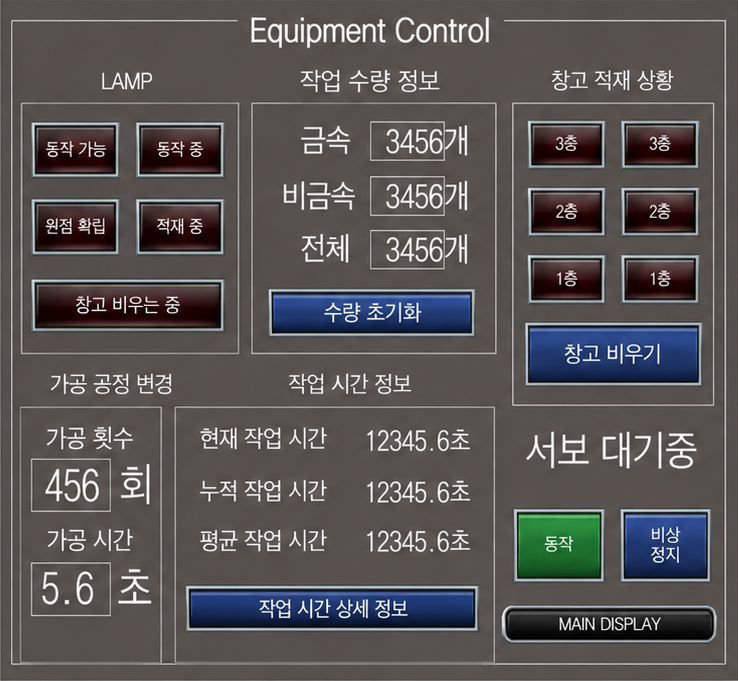
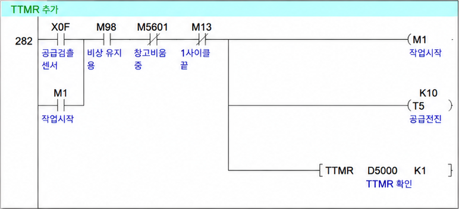

IMPLEMENTATION
창고 비움 요청과 운전 상태 표시
| 구현 항목 | 내용 |
|---|---|
| 창고 비움 | HMI 요청에 따라 적재된 소재를 순차 배출 |
| 실행 조건 | 자동 적재 시퀀스와 구분해 비움 실행 조건 구성 |
| HMI 구성 | 운전 요청과 장비 상태·작업 시간 표시 |
03 / INDUSTRIAL AUTOMATION
소재 투입·이송·재질 판별·창고 적재를 자동화하고, HMI에서 장비 상태를 확인하며 별도의 창고 비움 기능을 실행하는 프로젝트입니다.

소재 공급부터 분류·적재까지 자동화하고, HMI에서 창고 비움을 요청하며 운전 상태와 작업 시간을 확인할 수 있도록 구성했습니다.
창고 비움 기능과 TTMR 기반 작업 시간 측정, HMI 구성을 담당했습니다. 파트별 코드를 통합하고, 동작이 동시에 실행되지 않도록 시퀀스 간 실행 조건을 정리했습니다.

IMPLEMENTATION
| 구현 항목 | 내용 |
|---|---|
| 창고 비움 | HMI 요청에 따라 적재된 소재를 순차 배출 |
| 실행 조건 | 자동 적재 시퀀스와 구분해 비움 실행 조건 구성 |
| HMI 구성 | 운전 요청과 장비 상태·작업 시간 표시 |

IMPLEMENTATION
작업 시작 조건에 TTMR 시간 측정 명령을 연결하고, 작업 진행 시간을 HMI에서 확인하도록 구성했습니다.
| 구현 항목 | 확인한 동작 |
|---|---|
| 창고 비움 | HMI 요청에 따라 적재된 소재를 순차 배출 |
| 작업 시간 측정 | 작업 시작 조건에 따른 진행 시간 측정 |
| HMI 구성 | 창고 비움 요청과 운전 상태·작업 시간 확인 |
| 코드 통합 | 시퀀스 간 실행 조건을 구분해 중복 동작 방지 |
PROBLEM SOLVING
PROBLEM SOLVING
자동 공정과 별도 운전의 조건뿐 아니라, 사용자가 현재 상태를 이해할 수 있는 HMI 표시도 함께 고려해야 한다는 점을 배웠습니다.